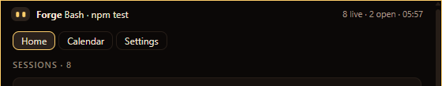
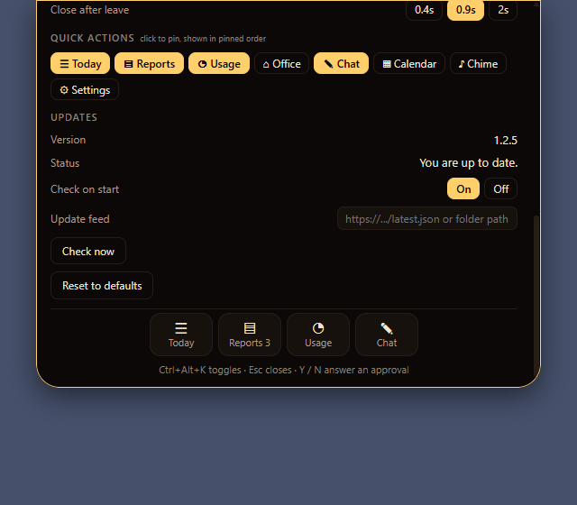
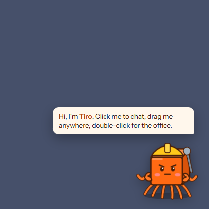

The island, Tiro and the tray
The notch-style overlay, the desktop character, the tray menu and keyboard use.
The island
The island is a notch-style overlay at the top centre of the screen. Its window is transparent and click-through except for the island itself.
- Collapsed: shows Tiro's eyes (idle, working, waiting for approval, done, offline). While music plays it widens to show the title, artist and a synced lyric line.
- Expanded (hover, click,
Ctrl+Alt+K, or when an approval arrives): tabs Home, Calendar and Settings, a dock of quick actions (Today, Reports, Usage, Office, Chat, and others you pin), approval buttons (keysYandNanswer the first request,Escwaves it away), and a Now playing card with previous, play-pause and next. - Modes: Always and Smart (hides when idle or when a fullscreen app is running and peeks back when the cursor touches the top edge). Choose from the tray.
- Notch on or off. The notch is on by default. To remove it, use any of: the tray menu item Show notch (a checkbox), the Notch switch at the bottom of the dashboard's Breaker box (desktop app only), or Settings, Notch inside the island itself. Off closes the island window and stops the now-playing and fullscreen watchers; on creates it again on the display you chose. The choice is remembered across restarts and launches at login. If you turn it off from the island, the tray item, the Breaker box or the optional shortcut bring it back. An optional global shortcut (field Toggle shortcut in the island's Settings, empty by default, for example
Ctrl+Alt+N) toggles it;Ctrl+Alt+Konly expands or pins a notch that exists, and does nothing while the notch is off. - Settings tab: theme (Ember, Midnight, Forest, Light, Custom accent), motion preset, pinned actions (up to 8), 12 or 24 hour clock, optional second clock, week start, edge and leave delays, now playing, Tiro face, animation and lyrics. Lyrics are off by default. If you turn them on, the title, artist, album and duration of the playing track are sent to lrclib.net to find synced lyrics (cached on this PC); nothing else is sent, and now-playing itself never leaves your PC.
- Updates: see the README. Set an https feed or a local folder, check, and install with one click. An installer downloaded over the network must come with a SHA-256 that matches; otherwise it is refused.



Tiro on your desktop
Tiro lives as a small always-on-top character on your desktop. Click to chat, give tasks and approve requests; double-click to open the office. Its mood follows the work: idle, typing, waving a flag when you are needed, confetti when a goal is done, asleep when paused. Hide or show it from the tray.

Tray
The tray menu has: Open office, Show notch (checkbox), Island (mode, chime on approval or done, display choice), Show Tiro, Start with Windows (packaged app only) and Quit Agent Office.
Keyboard and accessibility
- Office objects and desks are focusable with the keyboard and have labels (name, role, status).
- Camera:
+,-,0, mouse wheel, drag. - Island:
Ctrl+Alt+Kexpands or pins it (not while the notch is off); an optional shortcut you set turns the notch on or off;YandNanswer the first pending request,Escdismisses it. - Reduced motion: the office and island follow the system "reduce motion" setting and the animation preference; characters then appear in place instead of walking.